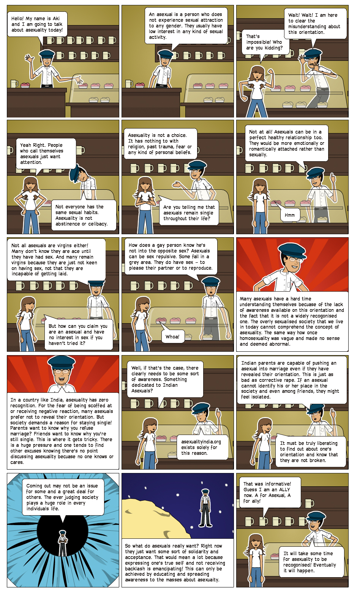

What is Asexuality?
Asexuality is a sexual orientation where a person does not experience sexual attraction to any gender, or has very little interest in sexual activity, if at all. Asexuality is a recently emerging phenomenon and is a new concept for most people. It still remains a widely underrepresented and misunderstood sexual orientation. While there have been a few academic and scientific researches on asexuality, what remains important is how we as a community self-identify ourselves.
Asexuality does not subscribe to a rigid definition and rather functions in the form of a spectrum. Each asexual is different from the other and would differ in terms of levels of attraction, arousal and romantic orientation.
While some asexuals may experience no attraction to other people, there are others who do experience attraction but do not find the need to act on that attraction sexually. For those who do experience attraction it could manifest in the form of romantic attraction or simply a desire to just get to know the person and spend time with them. Such attraction is usually towards a particular gender and so an asexual would accordingly identify as straight, lesbian, gay, bi etc.
Asexuality does not mean an absence of sexual arousal. Some asexuals do experience sexual arousal, but it’s more of a physiological and mechanical function of the body and does not associate with acting on this arousal sexually with a partner. Thus many asexuals do occasionally masturbate, but don’t care for sex.
Since asexuality is new and highly misunderstood, it is important to bust a few myths!
- Asexuality is a medical condition
Asexuality is not a medical condition, often misunderstood to be the result of a low sex drive or low libido that requires medical attention or treatment. Such an assumption ignores the fact that people with high libido also identify as asexuals. Asexuals must be separated from those people who experience physical and psychological distress because of their lack of interest in sex. We can assure you that asexuals are not distressed about anything except by the fact that people are just reluctant to understand who we are.
- Asexuality is nothing but celibacy
In the case of celibacy, you would normally have been sexually active and do experience sexual attraction but because of certain religious or personal beliefs, you choose to remain celibate. However as an asexual you are simply not attracted to anyone and so don’t want or need any sexual activity.
- Asexuals are boring, loveless (usually nerdy) people who hate sex
This is not true at all! In fact asexuals are equally capable of forming extremely intimate and close healthy relationships. Just like anyone else, asexual people too have emotional needs and may fulfil these either through close friendships, or a more exclusive intimate romantic relationship. Not all asexual people are sex repulsed and many do not cringe and are pretty comfortable in talking about sex. It’s just that they are not interested in doing it themselves.
- Asexuals have a history of mental trauma and sexual abuse
This is the most common misconception about asexuality. Research shows that there is no causal relation between asexuality and sexual abuse or mental trauma. Assuming that a person is asexual because of sexual abuse or mental trauma can be highly offensive to an asexual.
This comic here further attempts to explain asexuality and bust its myths.
Currently Asexuality Visibility Education Network (AVEN) is the largest online forum of Asexuals all over the world and is the best source of all information on asexuality. Then what is the purpose of this website? Well, while there are a few Indians on AVEN, Asexuality is still an invisible sexual orientation in India and is barely talked about. Apart from that, Indians experience asexuality in slightly different ways because of our cultural and traditional baggage. We do have an Ace community here, but many even within the community still hesitate to openly identify as Ace because of the cultural and social pressure. Thus, Asexual India attempts to create a platform that focuses on Asexuality from the Indian perspective.